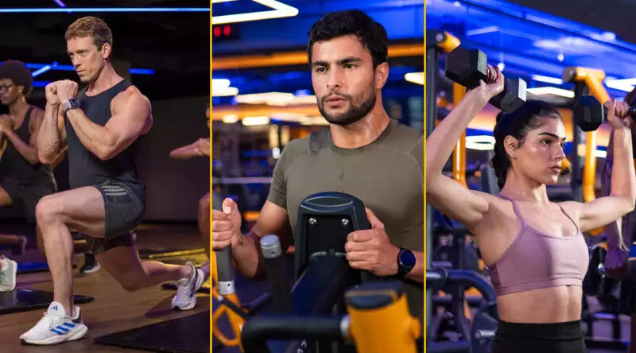
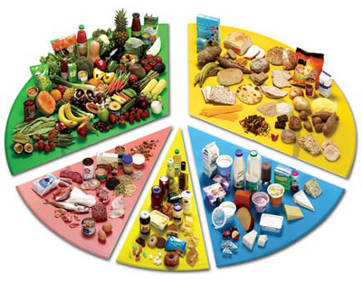

Texto explicativo de la rutina (objetivos, condiciones, etc.)
RUTINAS
Ejercicios

Dietas
Texto explicativo de la rutina (objetivos, condiciones, etc.)
Profesionales
Descripción de las capacidades de los profesionales, títulos, maestrías, etc.

Especialidad: Nutrición clínica y deportiva Grado Académico: Licenciado en Nutrición, con Maestría en Nutrición Deportiva Experiencia: Más de 10 años ayudando a personas a mejorar su alimentación y alcanzar sus objetivos de salud Áreas de enfoque: Planes personalizados de alimentación Nutrición para el rendimiento deportivo Control de peso y hábitos saludables Asesoría para enfermedades metabólicas (diabetes, hipertensión, etc.) "Mi misión es ayudarte a encontrar un equilibrio en tu alimentación para mejorar tu bienestar y calidad de vida." ¡Agenda una consulta y comencemos juntos tu transformación!